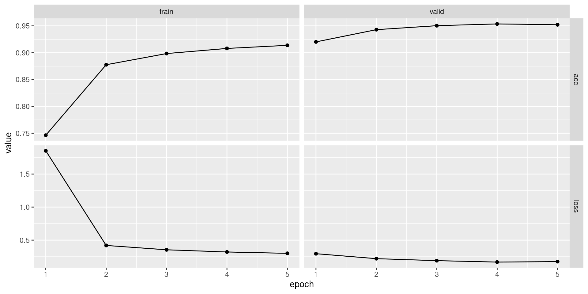

library(torch)
library(luz) # high-level interface for torch
library(torchvision) # for datasets and image transformation
library(torchdatasets) # for datasets we are going to use
library(zeallot)
torch_manual_seed(13)Convolutional
Neural Networks
Image Classification
Convolutional Neural Networks
Convolutional Neural Networks
Convolutional Neural Networks were developed in terms of image analysis.
The idea is to mimic how a human minds will classify an image.
A convolutional neural networks is trained by using a set of images that have been previously classfied.
Once the network is trained, we can give new types of images to be classified.
Convolutiona Neural Networks

Convolutional Neural Networks
A CNN will identify certain features, arrange them, and match them to what is closely is known.
CNN
Layers
Convolution Filter
A Convolution Filter will highlight certain features of an image.
The matching features will contain a large value.
Dismatching features will contain a smaller value.
Convolution Filter
\[ \left( \begin{array}{ccc} a & b & c \\ d & e & f \\ g & h & i \\ j & k & l \end{array} \right) \]
\[ \left( \begin{array}{cc} \alpha & \beta \\ \gamma & \delta \end{array} \right) \]
\[ \left( \begin{array}{ccc} a & b & c \\ d & e & f \\ g & h & i \\ j & k & l \end{array} \right) * \left( \begin{array}{cc} \alpha & \beta \\ \gamma & \delta \end{array} \right) \]
\[ \left( \begin{array}{cc} a\alpha + b\beta + d\gamma + w\delta & b\alpha + c\beta + e\gamma + f\delta \\ d\alpha + e\beta + g\gamma + h\delta & e\alpha + f\beta + h\gamma + i\delta \\ g\alpha + h\beta + j\gamma + k\delta & h\alpha + i\beta + k\gamma + l\delta \end{array} \right) \]
Convolutional Layers
Convolution layers are a set of filters in a hidden layers. We can have \(K\) layers that an image is passed through.
Pooling Layers
The act of summarizing a large matrix to a smaller matrix.
Max Pool
\[ \left[ \begin{array}{cccc} 1 & 3 & 9 & 5 \\ 6 & 2 & 3 & 4 \\ 1 & 0 & 6 & 4 \\ 8 & 4 & 2 & 7 \end{array} \right] \rightarrow \left[ \begin{array}{cc} 6 & 9 \\ 8 & 7 \end{array} \right] \]
Architecture
Data Image
For each image, there are 3 channels (RGB) that represent the image.
Afterwards, the image is gridded up into pixels with each containing a 3-values (RGB).
Data Image

Convolve Image
For each RGB channel, apply a set of convolution filters.
Then pool the filters.
Repeat for next hidden layer.
Flattening
Once the images has been pooled to a select pixels or features. The images are flattened to a set of inputs.
These inputs are used to a traditional neural network to classify an image.
Architecture

Training
The CNN is trained by supplying a set of pre-classified images.
The parameters in the convolution filters are estimates using standard techniques.
Data Augmentation
R MNIST Code
MNIST
This is a database of handwritten digits.
We will use to construct neural networks that will classify images.
Torch Packages in R
MNIST
###
train_ds <- mnist_dataset(root = ".", train = TRUE, download = TRUE)
test_ds <- mnist_dataset(root = ".", train = FALSE, download = TRUE)
train_ds[1]#> $x
#> [,1] [,2] [,3] [,4] [,5] [,6] [,7] [,8] [,9] [,10] [,11] [,12] [,13]
#> [1,] 0 0 0 0 0 0 0 0 0 0 0 0 0
#> [2,] 0 0 0 0 0 0 0 0 0 0 0 0 0
#> [3,] 0 0 0 0 0 0 0 0 0 0 0 0 0
#> [4,] 0 0 0 0 0 0 0 0 0 0 0 0 0
#> [5,] 0 0 0 0 0 0 0 0 0 0 0 0 0
#> [6,] 0 0 0 0 0 0 0 0 0 0 0 0 3
#> [7,] 0 0 0 0 0 0 0 0 30 36 94 154 170
#> [8,] 0 0 0 0 0 0 0 49 238 253 253 253 253
#> [9,] 0 0 0 0 0 0 0 18 219 253 253 253 253
#> [10,] 0 0 0 0 0 0 0 0 80 156 107 253 253
#> [11,] 0 0 0 0 0 0 0 0 0 14 1 154 253
#> [12,] 0 0 0 0 0 0 0 0 0 0 0 139 253
#> [13,] 0 0 0 0 0 0 0 0 0 0 0 11 190
#> [14,] 0 0 0 0 0 0 0 0 0 0 0 0 35
#> [15,] 0 0 0 0 0 0 0 0 0 0 0 0 0
#> [16,] 0 0 0 0 0 0 0 0 0 0 0 0 0
#> [17,] 0 0 0 0 0 0 0 0 0 0 0 0 0
#> [18,] 0 0 0 0 0 0 0 0 0 0 0 0 0
#> [19,] 0 0 0 0 0 0 0 0 0 0 0 0 0
#> [20,] 0 0 0 0 0 0 0 0 0 0 0 0 39
#> [21,] 0 0 0 0 0 0 0 0 0 0 24 114 221
#> [22,] 0 0 0 0 0 0 0 0 23 66 213 253 253
#> [23,] 0 0 0 0 0 0 18 171 219 253 253 253 253
#> [24,] 0 0 0 0 55 172 226 253 253 253 253 244 133
#> [25,] 0 0 0 0 136 253 253 253 212 135 132 16 0
#> [26,] 0 0 0 0 0 0 0 0 0 0 0 0 0
#> [27,] 0 0 0 0 0 0 0 0 0 0 0 0 0
#> [28,] 0 0 0 0 0 0 0 0 0 0 0 0 0
#> [,14] [,15] [,16] [,17] [,18] [,19] [,20] [,21] [,22] [,23] [,24] [,25]
#> [1,] 0 0 0 0 0 0 0 0 0 0 0 0
#> [2,] 0 0 0 0 0 0 0 0 0 0 0 0
#> [3,] 0 0 0 0 0 0 0 0 0 0 0 0
#> [4,] 0 0 0 0 0 0 0 0 0 0 0 0
#> [5,] 0 0 0 0 0 0 0 0 0 0 0 0
#> [6,] 18 18 18 126 136 175 26 166 255 247 127 0
#> [7,] 253 253 253 253 253 225 172 253 242 195 64 0
#> [8,] 253 253 253 253 251 93 82 82 56 39 0 0
#> [9,] 253 198 182 247 241 0 0 0 0 0 0 0
#> [10,] 205 11 0 43 154 0 0 0 0 0 0 0
#> [11,] 90 0 0 0 0 0 0 0 0 0 0 0
#> [12,] 190 2 0 0 0 0 0 0 0 0 0 0
#> [13,] 253 70 0 0 0 0 0 0 0 0 0 0
#> [14,] 241 225 160 108 1 0 0 0 0 0 0 0
#> [15,] 81 240 253 253 119 25 0 0 0 0 0 0
#> [16,] 0 45 186 253 253 150 27 0 0 0 0 0
#> [17,] 0 0 16 93 252 253 187 0 0 0 0 0
#> [18,] 0 0 0 0 249 253 249 64 0 0 0 0
#> [19,] 0 46 130 183 253 253 207 2 0 0 0 0
#> [20,] 148 229 253 253 253 250 182 0 0 0 0 0
#> [21,] 253 253 253 253 201 78 0 0 0 0 0 0
#> [22,] 253 253 198 81 2 0 0 0 0 0 0 0
#> [23,] 195 80 9 0 0 0 0 0 0 0 0 0
#> [24,] 11 0 0 0 0 0 0 0 0 0 0 0
#> [25,] 0 0 0 0 0 0 0 0 0 0 0 0
#> [26,] 0 0 0 0 0 0 0 0 0 0 0 0
#> [27,] 0 0 0 0 0 0 0 0 0 0 0 0
#> [28,] 0 0 0 0 0 0 0 0 0 0 0 0
#> [,26] [,27] [,28]
#> [1,] 0 0 0
#> [2,] 0 0 0
#> [3,] 0 0 0
#> [4,] 0 0 0
#> [5,] 0 0 0
#> [6,] 0 0 0
#> [7,] 0 0 0
#> [8,] 0 0 0
#> [9,] 0 0 0
#> [10,] 0 0 0
#> [11,] 0 0 0
#> [12,] 0 0 0
#> [13,] 0 0 0
#> [14,] 0 0 0
#> [15,] 0 0 0
#> [16,] 0 0 0
#> [17,] 0 0 0
#> [18,] 0 0 0
#> [19,] 0 0 0
#> [20,] 0 0 0
#> [21,] 0 0 0
#> [22,] 0 0 0
#> [23,] 0 0 0
#> [24,] 0 0 0
#> [25,] 0 0 0
#> [26,] 0 0 0
#> [27,] 0 0 0
#> [28,] 0 0 0
#>
#> $y
#> [1] 6# test_ds[2]Transforming Data
In order to use torch, you must transform the data: - tensor - flatten - tensor divided by the potential values (255)
###
transform <- function(x) {
x |>
torch_tensor() |>
torch_flatten() |>
torch_div(255)
}
train_ds <- mnist_dataset(
root = ".",
train = TRUE,
download = TRUE,
transform = transform
)
test_ds <- mnist_dataset(
root = ".",
train = FALSE,
download = TRUE,
transform = transform
)Neural Network Model Set Up
The nn_module will begin to setup the neural network. It requires the initialize and forward functions.
initialize is a function that describes the elements of the neural network, the layers.
nn_linear will construct a linear framework for the number of inputs, and the number of outputs in the neural network.
nn_dropout will randomly “zero” an input elements of a tensor with probability p.
nn_relu specifies the linear unit function
forward describes how the neural network is formatted using the values from the initialize function.
###
modelnn <- nn_module(
initialize = function() {
self$linear1 <- nn_linear(in_features = 28*28, out_features = 256)
self$linear2 <- nn_linear(in_features = 256, out_features = 128)
self$linear3 <- nn_linear(in_features = 128, out_features = 10)
self$drop1 <- nn_dropout(p = 0.4)
self$drop2 <- nn_dropout(p = 0.3)
self$activation <- nn_relu()
},
forward = function(x) {
x |>
self$linear1() |>
self$activation() |>
self$drop1() |>
self$linear2() |>
self$activation() |>
self$drop2() |>
self$linear3()
}
)Set Up Neural Network
Tells luz (torch) how to execute the neural network.
modelnn <- modelnn |>
setup(
loss = nn_cross_entropy_loss(),
optimizer = optim_rmsprop,
metrics = list(luz_metric_accuracy())
)Fit the Neural Network
system.time(
fitted <- modelnn |>
fit(
data = train_ds,
epochs = 5,
valid_data = 0.2,
dataloader_options = list(batch_size = 256),
verbose = FALSE
)
)#> user system elapsed
#> 156.931 0.495 155.996plot(fitted)
Test Efficiency of Neural Network
accuracy <- function(pred, truth) {
mean(pred == truth) }
# gets the true classes from all observations in test_ds.
truth <- sapply(seq_along(test_ds), function(x) test_ds[x][[2]])
fitted |>
predict(test_ds) |>
torch_argmax(dim = 2) |> # the predicted class is the one with higher 'logit'.
as_array() |> # convert to an R object
accuracy(truth) # use function created#> [1] 0.9572R Code CNN
CIFAR Data
The CIFAR database contains 60,000 images labeled with 20 superclasses with 5 animals for each superclass.
CIFAR Data
transform <- function(x) {
transform_to_tensor(x)
}
train_ds <- cifar100_dataset(
root = "./",
train = TRUE,
download = TRUE,
transform = transform
)
test_ds <- cifar100_dataset(
root = "./",
train = FALSE,
transform = transform
)
train_ds[1]#> $x
#> torch_tensor
#> (1,.,.) =
#> Columns 1 to 9 1.0000 1.0000 1.0000 1.0000 1.0000 1.0000 1.0000 1.0000 1.0000
#> 1.0000 0.9961 0.9961 0.9961 0.9961 0.9961 0.9961 0.9961 0.9961
#> 1.0000 0.9961 1.0000 1.0000 1.0000 1.0000 1.0000 1.0000 1.0000
#> 1.0000 0.9961 1.0000 1.0000 1.0000 1.0000 1.0000 0.9922 0.9882
#> 1.0000 0.9961 1.0000 1.0000 1.0000 1.0000 1.0000 0.9922 0.9098
#> 1.0000 0.9961 1.0000 1.0000 1.0000 1.0000 1.0000 0.9882 0.8353
#> 1.0000 0.9961 1.0000 1.0000 1.0000 1.0000 1.0000 0.9961 0.8824
#> 1.0000 0.9961 1.0000 1.0000 1.0000 1.0000 1.0000 0.9922 0.9765
#> 1.0000 1.0000 0.9961 0.9961 1.0000 1.0000 1.0000 0.9961 0.9961
#> 0.9922 1.0000 0.9882 0.9569 0.9804 0.9922 1.0000 0.9961 0.9804
#> 0.9647 0.9961 0.9333 0.7020 0.7569 0.9490 1.0000 0.9843 0.8745
#> 0.9686 0.9412 0.7255 0.5843 0.6118 0.8392 0.9922 0.9255 0.6863
#> 0.9569 0.7098 0.5098 0.6471 0.5451 0.5255 0.8235 0.6863 0.5490
#> 0.9059 0.4510 0.5255 0.6196 0.4235 0.4275 0.6118 0.4392 0.4431
#> 0.9255 0.5098 0.4196 0.3451 0.2235 0.3216 0.5020 0.4314 0.3647
#> 0.7098 0.4980 0.4314 0.2157 0.1098 0.2706 0.4902 0.3804 0.2980
#> 0.5804 0.5137 0.5176 0.2196 0.1412 0.5373 0.6941 0.4784 0.4667
#> 0.6824 0.6471 0.6275 0.4980 0.4235 0.5529 0.6706 0.6706 0.6392
#> 0.4392 0.4235 0.5412 0.6863 0.5647 0.5725 0.6000 0.5922 0.5412
#> 0.5765 0.5569 0.6431 0.6314 0.5137 0.5294 0.5529 0.4941 0.4745
#> 0.7804 0.7333 0.5686 0.4980 0.6549 0.7059 0.7059 0.6196 0.6000
#> 0.7216 0.7294 0.5137 0.3412 0.3569 0.4667 0.6471 0.7373 0.7725
#> 0.7608 0.7569 0.7451 0.6510 0.5176 0.4314 0.5843 0.6784 0.6471
#> 0.7686 0.7765 0.8118 0.8235 0.8118 0.7804 0.7725 0.6745 0.5608
#> 0.6196 0.6784 0.7059 0.7608 0.8275 0.8118 0.8196 0.7608 0.6941
#> 0.5569 0.5882 0.6157 0.6863 0.7098 0.7098 0.7490 0.7961 0.7922
#> 0.6667 0.6510 0.6588 0.6510 0.6000 0.5451 0.6588 0.7098 0.6784
#> 0.6431 0.6706 0.7137 0.7020 0.6118 0.5882 0.6471 0.6392 0.6706
#> 0.6000 0.6275 0.6196 0.6314 0.6157 0.6471 0.6078 0.6275 0.6745
#> ... [the output was truncated (use n=-1 to disable)]
#> [ CPUFloatType{3,32,32} ]
#>
#> $y
#> [1] 20Sample Image
par(mar = c(0, 0, 0, 0), mfrow = c(2, 2))
index <- sample(seq(50000), 4)
for (i in index) plot(as.raster(as.array(train_ds[i][[1]]$permute(c(2,3,1)))))
Defining CNN
conv_block <- nn_module(
initialize = function(in_channels, out_channels) {
self$conv <- nn_conv2d(
in_channels = in_channels,
out_channels = out_channels,
kernel_size = c(3,3),
padding = "same"
)
self$relu <- nn_relu()
self$pool <- nn_max_pool2d(kernel_size = c(2,2))
},
forward = function(x) {
x |>
self$conv() |>
self$relu() |>
self$pool()
}
)in_channels: Number of inputs planes (3 at the beginning)out_channels: Number of output planes (may vary)kernel_size: convolutional filter sizepadding: adds null values to images make the samenn_relu: Use ReLUnn_max_pool2d: Size Pooling Matrix
model <- nn_module(
initialize = function() {
self$conv <- nn_sequential(
conv_block(3, 32),
conv_block(32, 64),
conv_block(64, 128),
conv_block(128, 256)
)
self$output <- nn_sequential(
nn_dropout(0.5),
nn_linear(2*2*256, 512),
nn_relu(),
nn_linear(512, 100)
)
},
forward = function(x) {
x |>
self$conv() |>
torch_flatten(start_dim = 2) |>
self$output()
}
)nn_sequential: creates a sequence of functionsconv_block: defined previouslyOutput: Defines final neural networkForward: Defines overall neural network
model()#> An `nn_module` containing 964,516 parameters.
#>
#> ── Modules ─────────────────────────────────────────────────────────────────────
#> • conv: <nn_sequential> #388,416 parameters
#> • output: <nn_sequential> #576,100 parametersFitting CNN
system.time(
fitted <- model |>
setup(
loss = nn_cross_entropy_loss(),
optimizer = optim_rmsprop,
metrics = list(luz_metric_accuracy())
) |>
set_opt_hparams(lr = 0.001) |>
fit(
train_ds,
epochs = 10, #30,
valid_data = 0.2,
dataloader_options = list(batch_size = 128)
)
)#> user system elapsed
#> 1448.988 6.315 927.744print(fitted)#> A `luz_module_fitted`
#> ── Time ────────────────────────────────────────────────────────────────────────
#> • Total time: 15m 27.7s
#> • Avg time per training epoch: 1m 20.8s
#>
#> ── Results ─────────────────────────────────────────────────────────────────────
#> Metrics observed in the last epoch.
#>
#> ℹ Training:
#> loss: 2.2801
#> acc: 0.3939
#>
#> ── Model ───────────────────────────────────────────────────────────────────────
#> An `nn_module` containing 964,516 parameters.
#>
#> ── Modules ─────────────────────────────────────────────────────────────────────
#> • conv: <nn_sequential> #388,416 parameters
#> • output: <nn_sequential> #576,100 parametersevaluate(fitted, test_ds)#> A `luz_module_evaluation`
#> ── Results ─────────────────────────────────────────────────────────────────────
#> loss: 2.3907
#> acc: 0.3857Squirrel Image
Download labels json here.
Download the squirrel image here.
{kind=link}
#> [[1]]
#> [1] "sweet_pepper"
#>
#> [[2]]
#> [1] "butterfly"
#>
#> [[3]]
#> [1] "worm"
#>
#> [[4]]
#> [1] "lobster"
#>
#> [[5]]
#> [1] "keyboard"
#>
#> [[6]]
#> [1] "snake"
#>
#> [[7]]
#> [1] "lizard"
#>
#> [[8]]
#> [1] "bee"
#>
#> [[9]]
#> [1] "crab"
#>
#> [[10]]
#> [1] "tulip"
#>
#> [[11]]
#> [1] "forest"
#>
#> [[12]]
#> [1] "pear"
#>
#> [[13]]
#> [1] "orchid"
#>
#> [[14]]
#> [1] "bottle"
#>
#> [[15]]
#> [1] "beetle"
#>
#> [[16]]
#> [1] "dinosaur"
#>
#> [[17]]
#> [1] "rose"
#>
#> [[18]]
#> [1] "caterpillar"
#>
#> [[19]]
#> [1] "woman"
#>
#> [[20]]
#> [1] "bowl"
#>
#> [[21]]
#> [1] "table"
#>
#> [[22]]
#> [1] "sunflower"
#>
#> [[23]]
#> [1] "mouse"
#>
#> [[24]]
#> [1] "clock"
#>
#> [[25]]
#> [1] "bridge"
#>
#> [[26]]
#> [1] "couch"
#>
#> [[27]]
#> [1] "flatfish"
#>
#> [[28]]
#> [1] "lamp"
#>
#> [[29]]
#> [1] "bus"
#>
#> [[30]]
#> [1] "poppy"
#>
#> [[31]]
#> [1] "telephone"
#>
#> [[32]]
#> [1] "spider"
#>
#> [[33]]
#> [1] "motorcycle"
#>
#> [[34]]
#> [1] "baby"
#>
#> [[35]]
#> [1] "apple"
#>
#> [[36]]
#> [1] "bicycle"
#>
#> [[37]]
#> [1] "can"
#>
#> [[38]]
#> [1] "mushroom"
#>
#> [[39]]
#> [1] "cup"
#>
#> [[40]]
#> [1] "shrew"
#>
#> [[41]]
#> [1] "pine_tree"
#>
#> [[42]]
#> [1] "streetcar"
#>
#> [[43]]
#> [1] "bed"
#>
#> [[44]]
#> [1] "camel"
#>
#> [[45]]
#> [1] "possum"
#>
#> [[46]]
#> [1] "boy"
#>
#> [[47]]
#> [1] "aquarium_fish"
#>
#> [[48]]
#> [1] "television"
#>
#> [[49]]
#> [1] "man"
#>
#> [[50]]
#> [1] "girl"
#>
#> [[51]]
#> [1] "plate"
#>
#> [[52]]
#> [1] "ray"
#>
#> [[53]]
#> [1] "seal"
#>
#> [[54]]
#> [1] "snail"
#>
#> [[55]]
#> [1] "kangaroo"
#>
#> [[56]]
#> [1] "cockroach"
#>
#> [[57]]
#> [1] "pickup_truck"
#>
#> [[58]]
#> [1] "rabbit"
#>
#> [[59]]
#> [1] "turtle"
#>
#> [[60]]
#> [1] "trout"
#>
#> [[61]]
#> [1] "lawn_mower"
#>
#> [[62]]
#> [1] "shark"
#>
#> [[63]]
#> [1] "tractor"
#>
#> [[64]]
#> [1] "maple_tree"
#>
#> [[65]]
#> [1] "orange"
#>
#> [[66]]
#> [1] "bear"
#>
#> [[67]]
#> [1] "raccoon"
#>
#> [[68]]
#> [1] "crocodile"
#>
#> [[69]]
#> [1] "tiger"
#>
#> [[70]]
#> [1] "chimpanzee"
#>
#> [[71]]
#> [1] "skunk"
#>
#> [[72]]
#> [1] "rocket"
#>
#> [[73]]
#> [1] "otter"
#>
#> [[74]]
#> [1] "willow_tree"
#>
#> [[75]]
#> [1] "wardrobe"
#>
#> [[76]]
#> [1] "cattle"
#>
#> [[77]]
#> [1] "tank"
#>
#> [[78]]
#> [1] "beaver"
#>
#> [[79]]
#> [1] "train"
#>
#> [[80]]
#> [1] "palm_tree"
#>
#> [[81]]
#> [1] "house"
#>
#> [[82]]
#> [1] "sea"
#>
#> [[83]]
#> [1] "leopard"
#>
#> [[84]]
#> [1] "wolf"
#>
#> [[85]]
#> [1] "chair"
#>
#> [[86]]
#> [1] "squirrel"
#>
#> [[87]]
#> [1] "lion"
#>
#> [[88]]
#> [1] "fox"
#>
#> [[89]]
#> [1] "mountain"
#>
#> [[90]]
#> [1] "cloud"
#>
#> [[91]]
#> [1] "hamster"
#>
#> [[92]]
#> [1] "elephant"
#>
#> [[93]]
#> [1] "plain"
#>
#> [[94]]
#> [1] "skyscraper"
#>
#> [[95]]
#> [1] "dolphin"
#>
#> [[96]]
#> [1] "porcupine"
#>
#> [[97]]
#> [1] "whale"
#>
#> [[98]]
#> [1] "oak_tree"
#>
#> [[99]]
#> [1] "castle"
#>
#> [[100]]
#> [1] "road"All R Code
library(torch)
library(luz) # high-level interface for torch
library(torchvision) # for datasets and image transformation
library(torchdatasets) # for datasets we are going to use
library(zeallot)
torch_manual_seed(13)
transform <- function(x) {
transform_to_tensor(x)
}
train_ds <- cifar100_dataset(
root = "./",
train = TRUE,
download = TRUE,
transform = transform
)
test_ds <- cifar100_dataset(
root = "./",
train = FALSE,
transform = transform
)
train_ds[1]
par(mar = c(0, 0, 0, 0), mfrow = c(2, 2))
index <- sample(seq(50000), 4)
for (i in index) plot(as.raster(as.array(train_ds[i][[1]]$permute(c(2,3,1)))))
conv_block <- nn_module(
initialize = function(in_channels, out_channels) {
self$conv <- nn_conv2d(
in_channels = in_channels,
out_channels = out_channels,
kernel_size = c(3,3),
padding = "same"
)
self$relu <- nn_relu()
self$pool <- nn_max_pool2d(kernel_size = c(2,2))
},
forward = function(x) {
x |>
self$conv() |>
self$relu() |>
self$pool()
}
)
model <- nn_module(
initialize = function() {
self$conv <- nn_sequential(
conv_block(3, 32),
conv_block(32, 64),
conv_block(64, 128),
conv_block(128, 256)
)
self$output <- nn_sequential(
nn_dropout(0.5),
nn_linear(2*2*256, 512),
nn_relu(),
nn_linear(512, 100)
)
},
forward = function(x) {
x |>
self$conv() |>
torch_flatten(start_dim = 2) |>
self$output()
}
)
model()
system.time(
fitted <- model |>
setup(
loss = nn_cross_entropy_loss(),
optimizer = optim_rmsprop,
metrics = list(luz_metric_accuracy())
) |>
set_opt_hparams(lr = 0.001) |>
fit(
train_ds,
epochs = 10, #30,
valid_data = 0.2,
dataloader_options = list(batch_size = 128)
)
)
print(fitted)
evaluate(fitted, test_ds)
cifar100_mapping <- jsonlite::read_json("data/cifar-100-labels.json")
x <- torch_empty(1, 3, 32, 32)
img_path <- file.path("img/squirrel.jpg")
img <- img_path |>
base_loader() |>
transform_to_tensor() |>
transform_resize(c(32, 32)) |>
# normalize with imagenet mean and stds.
transform_normalize(
mean = c(0.4914, 0.4822, 0.4465),
std = c(0.2470, 0.2435, 0.2616)
)
x[1,,, ] <- img
preds <- fitted |>
predict(x) |>
torch_topk(dim = 2, k = 100)
cifar100_mapping[as.integer(preds[[2]])]R Code Pre-Trained CNN
Pre-Trained CNN
Both Torch and Tensorflow has access to convolutional neural networks trained using the imagenet data base.
Pre-Trained CNN
model_imagenet <- torchvision::model_resnet18(pretrained = TRUE)
model_imagenet$eval() # put the model in evaluation modeLoading Images
Download book images here.
img_dir <- "img/books"
image_names <- list.files(img_dir)
num_images <- length(image_names)
x <- torch_empty(num_images, 3, 224, 224)
for (i in 1:num_images) {
img_path <- file.path(img_dir, image_names[i])
img <- img_path |>
base_loader() |>
transform_to_tensor() |>
transform_resize(c(224, 224)) |>
# normalize with imagenet mean and stds.
transform_normalize(
mean = c(0.485, 0.456, 0.406),
std = c(0.229, 0.224, 0.225)
)
x[i,,, ] <- img
}Prediction
preds <- model_imagenet(x)
top3 <- torch_topk(preds, dim = 2, k = 3)mapping <- jsonlite::read_json("https://s3.amazonaws.com/deep-learning-models/image-models/imagenet_class_index.json") |>
sapply(function(x) x[[2]])top3_prob <- top3[[1]] |>
nnf_softmax(dim = 2) |>
torch_unbind() |>
lapply(as.numeric)
top3_class <- top3[[2]] |>
torch_unbind() |>
lapply(function(x) mapping[as.integer(x)])
result <- purrr::map2(top3_prob, top3_class, function(pr, cl) {
names(pr) <- cl
pr
})
names(result) <- image_namesprint(result)#> $flamingo.jpg
#> flamingo spoonbill white_stork
#> 0.978253186 0.016800024 0.004946792
#>
#> $hawk_cropped.jpeg
#> kite jay magpie
#> 0.6131909 0.2380927 0.1487164
#>
#> $hawk.jpg
#> eel agama common_newt
#> 0.5320330 0.2608396 0.2071273
#>
#> $huey.jpg
#> Lhasa Tibetan_terrier Shih-Tzu
#> 0.80046022 0.11664963 0.08289006
#>
#> $kitty.jpg
#> Saint_Bernard guinea_pig Bernese_mountain_dog
#> 0.3915999 0.3394892 0.2689110
#>
#> $weaver.jpg
#> hummingbird lorikeet bee_eater
#> 0.3568341 0.3490927 0.2940732Squirrel
x <- torch_empty(1, 3, 224, 224)
img_path <- file.path("img/squirrel.jpg")
img <- img_path |>
base_loader() |>
transform_to_tensor() |>
transform_resize(c(224, 224)) |>
# normalize with imagenet mean and stds.
transform_normalize(
mean = c(0.485, 0.456, 0.406),
std = c(0.229, 0.224, 0.225)
)
x[1,,, ] <- imgpreds <- model_imagenet(x)
top3 <- torch_topk(preds, dim = 2, k = 3)
mapping[as.integer(top3[[2]])]#> 288 48 50
#> "leopard" "Komodo_dragon" "American_alligator"ALL R Code
library(torch)
library(luz) # high-level interface for torch
library(torchvision) # for datasets and image transformation
library(torchdatasets) # for datasets we are going to use
library(zeallot)
torch_manual_seed(13)
img_dir <- "img/books" ## CHANGE THIS
image_names <- list.files(img_dir)
num_images <- length(image_names)
x <- torch_empty(num_images, 3, 224, 224)
for (i in 1:num_images) {
img_path <- file.path(img_dir, image_names[i])
img <- img_path |>
base_loader() |>
transform_to_tensor() |>
transform_resize(c(224, 224)) |>
# normalize with imagenet mean and stds.
transform_normalize(
mean = c(0.485, 0.456, 0.406),
std = c(0.229, 0.224, 0.225)
)
x[i,,, ] <- img
}
model_imagenet <- torchvision::model_resnet18(pretrained = TRUE)
model_imagenet$eval() # put the model in evaluation mode
preds <- model_imagenet(x)
top3 <- torch_topk(preds, dim = 2, k = 3)
mapping <- jsonlite::read_json("https://s3.amazonaws.com/deep-learning-models/image-models/imagenet_class_index.json") |>
sapply(function(x) x[[2]])
top3_prob <- top3[[1]] |>
nnf_softmax(dim = 2) |>
torch_unbind() |>
lapply(as.numeric)
top3_class <- top3[[2]] |>
torch_unbind() |>
lapply(function(x) mapping[as.integer(x)])
result <- purrr::map2(top3_prob, top3_class, function(pr, cl) {
names(pr) <- cl
pr
})
names(result) <- image_names
print(result)
x <- torch_empty(1, 3, 224, 224)
img_path <- file.path("img/squirrel.jpg") ## CHANGE THIS
img <- img_path |>
base_loader() |>
transform_to_tensor() |>
transform_resize(c(224, 224)) |>
# normalize with imagenet mean and stds.
transform_normalize(
mean = c(0.485, 0.456, 0.406),
std = c(0.229, 0.224, 0.225)
)
x[1,,, ] <- img
preds <- model_imagenet(x)
top3 <- torch_topk(preds, dim = 2, k = 3)
mapping[as.integer(top3[[2]])]